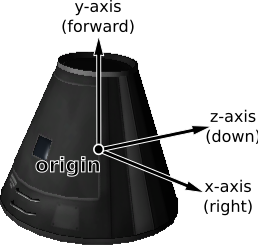
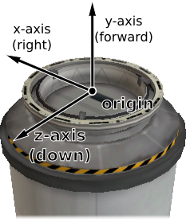
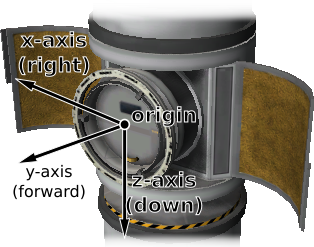
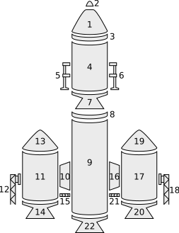
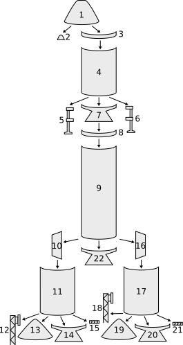
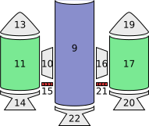
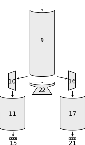
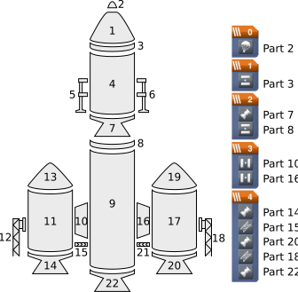
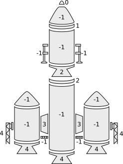
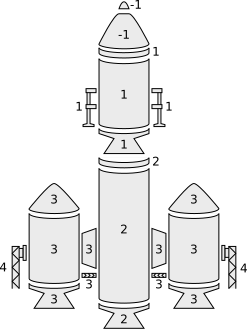

Parts#
The following classes allow interaction with a vessels individual parts.
Parts#
- class Parts#
Instances of this class are used to interact with the parts of a vessel. An instance can be obtained by calling
Vessel.Parts.- Part Root { get; }#
The vessels root part.
- Game Scenes:
All
Note
See the discussion on Trees of Parts.
- Part Controlling { get; set; }#
The part from which the vessel is controlled. Returns
nullif the vessel has no control point, in which case it is oriented by its root part.- Game Scenes:
Flight
Note
A vessel gets no control point when it is created by a decoupler or an undocking and none of its parts is a command module with crew aboard. A probe core does not give it one either. Assign this property to choose the control point, which is equivalent to “Control From Here” in game.
- IList<Part> WithName (string name)#
A list of parts whose
Part.Nameis name.- Parameters:
name – The name of the part.
- Game Scenes:
All
- IList<Part> WithTitle (string title)#
A list of all parts whose
Part.Titleis title.- Parameters:
title – The title of the part.
- Game Scenes:
All
- IList<Part> WithTag (string tag)#
A list of all parts whose
Part.Tagis tag.- Parameters:
tag – The name tag of the part.
- Game Scenes:
All
- IList<Part> WithModule (string moduleName)#
A list of all parts that contain a
ModulewhoseModule.Nameis moduleName.- Parameters:
moduleName – The name of the module.
- Game Scenes:
All
- IList<Module> ModulesWithName (string moduleName)#
A list of modules (combined across all parts in the vessel) whose
Module.Nameis moduleName.- Parameters:
moduleName – The name of the module.
- Game Scenes:
All
- IList<Antenna> Antennas { get; }#
A list of all antennas in the vessel.
- Game Scenes:
All
Note
If RemoteTech is installed, this will always return an empty list. To interact with RemoteTech antennas, use the RemoteTech service APIs.
- IList<ControlSurface> ControlSurfaces { get; }#
A list of all control surfaces in the vessel.
- Game Scenes:
All
- IList<DockingPort> DockingPorts { get; }#
A list of all docking ports in the vessel.
- Game Scenes:
All
- IList<Engine> Engines { get; }#
A list of all engines in the vessel.
- Game Scenes:
All
Note
This includes any part that generates thrust. This covers many different types of engine, including liquid fuel rockets, solid rocket boosters, jet engines and RCS thrusters.
- IList<Experiment> Experiments { get; }#
A list of all science experiments in the vessel.
- Game Scenes:
All
- IList<LaunchClamp> LaunchClamps { get; }#
A list of all launch clamps attached to the vessel.
- Game Scenes:
All
- IList<ResourceDrain> ResourceDrains { get; }#
A list of all resource drains in the vessel.
- Game Scenes:
All
- IList<ReactionWheel> ReactionWheels { get; }#
A list of all reaction wheels in the vessel.
- Game Scenes:
All
- IList<ResourceConverter> ResourceConverters { get; }#
A list of all resource converters in the vessel.
- Game Scenes:
All
- IList<ResourceHarvester> ResourceHarvesters { get; }#
A list of all resource harvesters in the vessel.
- Game Scenes:
All
- IList<RoboticController> RoboticControllers { get; }#
A list of all robotic controllers in the vessel.
- Game Scenes:
All
- IList<RoboticHinge> RoboticHinges { get; }#
A list of all robotic hinges in the vessel.
- Game Scenes:
All
- IList<RoboticPiston> RoboticPistons { get; }#
A list of all robotic pistons in the vessel.
- Game Scenes:
All
- IList<RoboticRotation> RoboticRotations { get; }#
A list of all robotic rotations in the vessel.
- Game Scenes:
All
- IList<RoboticRotor> RoboticRotors { get; }#
A list of all robotic rotors in the vessel.
- Game Scenes:
All
- IList<SolarPanel> SolarPanels { get; }#
A list of all solar panels in the vessel.
- Game Scenes:
All
Part#
- class Part#
Represents an individual part. Vessels are made up of multiple parts. Instances of this class can be obtained by several methods in
Parts.- string Name { get; }#
Internal name of the part, as used in part cfg files. For example “Mark1-2Pod”.
- Game Scenes:
All
- string Title { get; }#
Title of the part, as shown when the part is right clicked in-game. For example “Mk1-2 Command Pod”.
- Game Scenes:
All
- ConfigNode Config { get; }#
The static configuration of the part, as found in its part cfg file. This provides access to data that is not exposed elsewhere, such as the configuration of the part’s modules. Returns
nullif the part has no associated configuration node.- Game Scenes:
All
- string Tag { get; set; }#
The name tag for the part. Can be set to a custom string using the in-game user interface. Throws an exception if no name tag part module is installed.
- Game Scenes:
All
Note
The name tag part module is provided by KSPCommunityPartModules 0.5 or later, or by kOS, which shares this string.
- bool Highlighted { get; set; }#
Whether the part is highlighted.
- Game Scenes:
Flight
Note
The highlighting is removed when the client that enabled it disconnects.
- StdLib.ColorRGB HighlightColor { get; set; }#
The color used to highlight the part.
- Game Scenes:
Flight
- Part Parent { get; }#
The parts parent. Returns
nullif the part does not have a parent. This, in combination withPart.Children, can be used to traverse the vessels parts tree.- Game Scenes:
All
Note
See the discussion on Trees of Parts.
- IList<Part> Children { get; }#
The parts children. Returns an empty list if the part has no children. This, in combination with
Part.Parent, can be used to traverse the vessels parts tree.- Game Scenes:
All
Note
See the discussion on Trees of Parts.
- bool AxiallyAttached { get; }#
Whether the part is axially attached to its parent, i.e. on the top or bottom of its parent. If the part has no parent, returns
false.- Game Scenes:
All
Note
See the discussion on Attachment Modes.
- bool RadiallyAttached { get; }#
Whether the part is radially attached to its parent, i.e. on the side of its parent. If the part has no parent, returns
false.- Game Scenes:
All
Note
See the discussion on Attachment Modes.
- int Stage { get; }#
The stage in which this part will be activated. Returns -1 if the part is not activated by staging.
- Game Scenes:
All
Note
See the discussion on Staging.
- int DecoupleStage { get; }#
The stage in which this part will be decoupled. Returns -1 if the part is never decoupled from the vessel.
- Game Scenes:
All
Note
See the discussion on Staging.
- double Mass { get; }#
The current mass of the part, including resources it contains, in kilograms. Returns zero if the part is massless.
- Game Scenes:
All
- double DryMass { get; }#
The mass of the part, not including any resources it contains, in kilograms. Returns zero if the part is massless.
- Game Scenes:
All
- bool Shielded { get; }#
Whether the part is shielded from the exterior of the vessel, for example by a fairing.
- Game Scenes:
Flight
- float DynamicPressure { get; }#
The dynamic pressure acting on the part, in Pascals.
- Game Scenes:
Flight
- float StaticPressure { get; }#
The static pressure acting on the part, in Pascals. Below the waterline this includes the pressure of the water.
- Game Scenes:
Flight
- double Displacement { get; }#
The volume of water the part displaces when fully submerged, in \(\mathrm{m^{3}}\).
- Game Scenes:
Flight, Editor Vab, Editor Sph
Note
See
Part.DisplacedVolumefor the volume it is displacing now.
- float BuoyancyMultiplier { get; }#
The multiplier applied to the buoyant force on the part. One for most parts.
- Game Scenes:
Flight, Editor Vab, Editor Sph
- double BuoyantForceAt (double density, double gravity)#
The buoyant force on the part when fully submerged in a fluid of the given density, in Newtons.
- Parameters:
density – The density of the fluid, in \(\mathrm{kg/m^{3}}\).
gravity – The acceleration due to gravity, in \(\mathrm{m/s^{2}}\).
- Game Scenes:
Flight, Editor Vab, Editor Sph
Note
Applies
SpaceCenter.BuoyancyScalarandPart.BuoyancyMultiplier, so the result is what the game would do to the part rather than what Archimedes’ principle alone gives.
- double SubmergedPortion { get; }#
The fraction of the part below the waterline, between 0 and 1.
- Game Scenes:
Flight
- double DisplacedVolume { get; }#
The volume of water the part is displacing, in \(\mathrm{m^{3}}\).
- Game Scenes:
Flight
- double Depth { get; }#
The depth of the part below the waterline, in meters, measured at
Part.CenterOfDisplacement. Negative above the waterline. Returns zero if the body the vessel is at has no ocean.- Game Scenes:
Flight
- double MinDepth { get; }#
The depth of the shallowest point of the part below the waterline, in meters. Returns zero if the body the vessel is at has no ocean.
- Game Scenes:
Flight
- double MaxDepth { get; }#
The depth of the deepest point of the part below the waterline, in meters. Returns zero if the body the vessel is at has no ocean.
- Game Scenes:
Flight
Note
The game ramps the buoyant force in over the first fraction of a meter of this depth.
- float SubmergedDynamicPressure { get; }#
The dynamic pressure of the water acting on the part, in Pascals.
- Game Scenes:
Flight
- double SubmergedDragMultiplier { get; }#
The multiplier applied to the drag on the part while it is submerged.
- Game Scenes:
Flight
Note
The game sets this high on splashdown and eases it down as the part moves through the water. It climbs back once the part slows to a crawl, so a hull under way reads lower than one lying still.
- double SubmergedLiftMultiplier { get; }#
The multiplier applied to the lift on the part while it is submerged.
- Game Scenes:
Flight
- float WaterAngularDragMultiplier { get; }#
The multiplier applied to the angular drag on the part while it is submerged.
- Game Scenes:
Flight, Editor Vab, Editor Sph
Note
Part of the part’s configuration rather than a live readout, so it reads the same in the editor and at a body with no ocean.
- double ImpactTolerance { get; }#
The impact tolerance of the part, in \(\mathrm{m/s}\).
- Game Scenes:
All
- double SkinTemperature { get; }#
Temperature of the skin of the part, in Kelvin.
- Game Scenes:
Flight
- double MaxTemperature { get; }#
Maximum temperature that the part can survive, in Kelvin.
- Game Scenes:
All
- double MaxSkinTemperature { get; }#
Maximum temperature that the skin of the part can survive, in Kelvin.
- Game Scenes:
All
- double MaxPressure { get; }#
Maximum pressure that the part can survive, in Pascals.
- Game Scenes:
All
Note
With part pressure limits enabled in the difficulty settings, the part is destroyed when
Part.StaticPressureplusPart.DynamicPressureexceeds this.
- float ThermalMass { get; }#
A measure of how much energy it takes to increase the internal temperature of the part, in Joules per Kelvin.
- Game Scenes:
Flight
- float ThermalSkinMass { get; }#
A measure of how much energy it takes to increase the skin temperature of the part, in Joules per Kelvin.
- Game Scenes:
Flight
- float ThermalResourceMass { get; }#
A measure of how much energy it takes to increase the temperature of the resources contained in the part, in Joules per Kelvin.
- Game Scenes:
Flight
- float ThermalConductionFlux { get; }#
The rate at which heat energy is conducting into or out of the part via contact with other parts. Measured in energy per unit time, or power, in Watts. A positive value means the part is gaining heat energy, and negative means it is losing heat energy.
- Game Scenes:
Flight
- float ThermalConvectionFlux { get; }#
The rate at which heat energy is convecting into or out of the part from the surrounding atmosphere. Measured in energy per unit time, or power, in Watts. A positive value means the part is gaining heat energy, and negative means it is losing heat energy.
- Game Scenes:
Flight
- float ThermalRadiationFlux { get; }#
The rate at which heat energy is radiating into or out of the part from the surrounding environment. Measured in energy per unit time, or power, in Watts. A positive value means the part is gaining heat energy, and negative means it is losing heat energy.
- Game Scenes:
Flight
- float ThermalInternalFlux { get; }#
The rate at which heat energy is begin generated by the part. For example, some engines generate heat by combusting fuel. Measured in energy per unit time, or power, in Watts. A positive value means the part is gaining heat energy, and negative means it is losing heat energy.
- Game Scenes:
Flight
- float ThermalSkinToInternalFlux { get; }#
The rate at which heat energy is transferring between the part’s skin and its internals. Measured in energy per unit time, or power, in Watts. A positive value means the part’s internals are gaining heat energy, and negative means its skin is gaining heat energy.
- Game Scenes:
Flight
- IList<CrewMember> Crew { get; }#
The crew members occupying the part.
- Game Scenes:
Flight
- Resources Resources { get; }#
A
Part.Resourcesobject for the part.- Game Scenes:
All
- IList<Part> FuelLinesFrom { get; }#
The parts that are connected to this part via fuel lines, where the direction of the fuel line is into this part.
- Game Scenes:
Flight
Note
See the discussion on Fuel Lines.
- IList<Part> FuelLinesTo { get; }#
The parts that are connected to this part via fuel lines, where the direction of the fuel line is out of this part.
- Game Scenes:
Flight
Note
See the discussion on Fuel Lines.
- Antenna Antenna { get; }#
An
Part.Antennaif the part is an antenna, otherwisenull.- Game Scenes:
All
Note
If RemoteTech is installed, this will always return
null. To interact with RemoteTech antennas, use the RemoteTech service APIs.
- CargoBay CargoBay { get; }#
A
Part.CargoBayif the part is a cargo bay, otherwisenull.- Game Scenes:
All
- ControlSurface ControlSurface { get; }#
A
Part.ControlSurfaceif the part is an aerodynamic control surface, otherwisenull.- Game Scenes:
All
- Decoupler Decoupler { get; }#
A
Part.Decouplerif the part is a decoupler, otherwisenull.- Game Scenes:
All
- DockingPort DockingPort { get; }#
A
Part.DockingPortif the part is a docking port, otherwisenull.- Game Scenes:
All
- Engine Engine { get; }#
An
Part.Engineif the part is an engine, otherwisenull.- Game Scenes:
All
- Experiment Experiment { get; }#
An
Part.Experimentif the part contains a single science experiment, otherwisenull.- Game Scenes:
All
Note
Throws an exception if the part contains more than one experiment. In that case, use
Part.Experimentsto get the list of experiments in the part.
- IList<Experiment> Experiments { get; }#
A list of
Part.Experimentobjects that the part contains.- Game Scenes:
All
- Fairing Fairing { get; }#
A
Part.Fairingif the part is a fairing, otherwisenull.- Game Scenes:
All
- Intake Intake { get; }#
An
Part.Intakeif the part is an intake, otherwisenull.- Game Scenes:
All
Note
This includes any part that generates thrust. This covers many different types of engine, including liquid fuel rockets, solid rocket boosters and jet engines. For RCS thrusters see
Part.RCS.
- LaunchClamp LaunchClamp { get; }#
A
Part.LaunchClampif the part is a launch clamp, otherwisenull.- Game Scenes:
All
- Light Light { get; }#
A
Part.Lightif the part is a light, otherwisenull.- Game Scenes:
All
- Parachute Parachute { get; }#
A
Part.Parachuteif the part is a parachute, otherwisenull.- Game Scenes:
All
- Radiator Radiator { get; }#
A
Part.Radiatorif the part is a radiator, otherwisenull.- Game Scenes:
All
- ResourceDrain ResourceDrain { get; }#
A
Part.ResourceDrainif the part is a resource drain, otherwisenull.- Game Scenes:
All
- ReactionWheel ReactionWheel { get; }#
A
Part.ReactionWheelif the part is a reaction wheel, otherwisenull.- Game Scenes:
All
- ResourceConverter ResourceConverter { get; }#
A
Part.ResourceConverterif the part is a resource converter, otherwisenull.- Game Scenes:
All
- ResourceHarvester ResourceHarvester { get; }#
A
Part.ResourceHarvesterif the part is a resource harvester, otherwisenull.- Game Scenes:
All
- RoboticController RoboticController { get; }#
A
Part.RoboticControllerif the part is a robotic controller, otherwisenull.- Game Scenes:
All
- RoboticHinge RoboticHinge { get; }#
A
Part.RoboticHingeif the part is a robotic hinge, otherwisenull.- Game Scenes:
All
- RoboticPiston RoboticPiston { get; }#
A
Part.RoboticPistonif the part is a robotic piston, otherwisenull.- Game Scenes:
All
- RoboticRotation RoboticRotation { get; }#
A
Part.RoboticRotationif the part is a robotic rotation servo, otherwisenull.- Game Scenes:
All
- RoboticRotor RoboticRotor { get; }#
A
Part.RoboticRotorif the part is a robotic rotor, otherwisenull.- Game Scenes:
All
- Sensor Sensor { get; }#
A
Part.Sensorif the part is a sensor, otherwisenull.- Game Scenes:
All
- SolarPanel SolarPanel { get; }#
A
Part.SolarPanelif the part is a solar panel, otherwisenull.- Game Scenes:
All
- Wheel Wheel { get; }#
A
Part.Wheelif the part is a wheel, otherwisenull.- Game Scenes:
All
- Tuple<double, double, double> Position (ReferenceFrame referenceFrame)#
The position of the part in the given reference frame.
- Parameters:
referenceFrame – The reference frame that the returned position vector is in.
- Returns:
The position as a vector.
- Game Scenes:
Flight, Editor Vab, Editor Sph
Note
This is a fixed position in the part, defined by the parts model. It s not necessarily the same as the parts center of mass. Use
Part.CenterOfMassto get the parts center of mass.
- Tuple<double, double, double> CenterOfMass (ReferenceFrame referenceFrame)#
The position of the parts center of mass in the given reference frame. If the part is physicsless in flight, this is equivalent to
Part.Position.- Parameters:
referenceFrame – The reference frame that the returned position vector is in.
- Returns:
The position as a vector.
- Game Scenes:
Flight, Editor Vab, Editor Sph
- BoundingBox BoundingBox (ReferenceFrame referenceFrame)#
The axis-aligned bounding box of the part in the given reference frame.
- Parameters:
referenceFrame – The reference frame that the returned position vectors are in.
- Returns:
The positions of the minimum and maximum vertices of the box.
- Game Scenes:
Flight, Editor Vab, Editor Sph
Note
This is computed from the meshes that make up the parts model, and covers only this part - the models of any child parts are excluded. If the part has no visible model, the box has zero volume and is centered on the
Part.CenterOfMassof the part.
- Tuple<double, double, double> Direction (ReferenceFrame referenceFrame)#
The direction the part points in, in the given reference frame.
- Parameters:
referenceFrame – The reference frame that the returned direction is in.
- Returns:
The direction as a unit vector.
- Game Scenes:
Flight, Editor Vab, Editor Sph
- Tuple<double, double, double> Velocity (ReferenceFrame referenceFrame)#
The linear velocity of the part in the given reference frame.
- Parameters:
referenceFrame – The reference frame that the returned velocity vector is in.
- Returns:
The velocity as a vector. The vector points in the direction of travel, and its magnitude is the speed of the body in \(\mathrm{m/s}\).
- Game Scenes:
Flight
- Tuple<double, double, double, double> Rotation (ReferenceFrame referenceFrame)#
The rotation of the part, in the given reference frame.
- Parameters:
referenceFrame – The reference frame that the returned rotation is in.
- Returns:
The rotation as a quaternion of the form
(x, y, z, w).- Game Scenes:
Flight, Editor Vab, Editor Sph
- Tuple<double, double, double> Lift (ReferenceFrame referenceFrame)#
The aerodynamic lift currently acting on the part.
- Parameters:
referenceFrame – The reference frame that the returned vector is in.
- Returns:
A vector pointing in the direction that the force acts, with its magnitude equal to the strength of the force in Newtons.
- Game Scenes:
Flight
Note
Not available when the Ferram Aerospace Research mod is installed.
- Tuple<double, double, double> Drag (ReferenceFrame referenceFrame)#
The aerodynamic drag currently acting on the part.
- Parameters:
referenceFrame – The reference frame that the returned vector is in.
- Returns:
A vector pointing in the direction that the force acts, with its magnitude equal to the strength of the force in Newtons.
- Game Scenes:
Flight
Note
Not available when the Ferram Aerospace Research mod is installed.
- Tuple<double, double, double> CenterOfBuoyancy (ReferenceFrame referenceFrame)#
The point the buoyant force on the part acts at, in the given reference frame.
- Parameters:
referenceFrame – The reference frame that the returned position vector is in.
- Returns:
The position as a vector.
- Game Scenes:
Flight, Editor Vab, Editor Sph
Note
A submerged part reports the point the game applied the force at, which it shifts towards the submerged part of the hull. Any other part reports its configured center of buoyancy.
- Tuple<double, double, double> CenterOfDisplacement (ReferenceFrame referenceFrame)#
The point the depth of the part is measured at, in the given reference frame.
- Parameters:
referenceFrame – The reference frame that the returned position vector is in.
- Returns:
The position as a vector.
- Game Scenes:
Flight, Editor Vab, Editor Sph
- Tuple<double, double, double> BuoyantForce (ReferenceFrame referenceFrame)#
The buoyant force currently acting on the part.
- Parameters:
referenceFrame – The reference frame that the returned vector is in.
- Returns:
A vector pointing in the direction that the force acts, with its magnitude equal to the strength of the force in Newtons.
- Game Scenes:
Flight
Note
The buoyant force on its own. The water drag and lift the game applies alongside it are reported by
Part.SubmergedDragMultiplierandPart.SubmergedLiftMultiplier.
- Tuple<double, double, double> MomentOfInertia { get; }#
The moment of inertia of the part in \(\mathrm{kg \cdot m^{2}}\) around its center of mass in the parts center of mass reference frame (
Part.CenterOfMassReferenceFrame).- Game Scenes:
Flight, Editor Vab, Editor Sph
- IList<double> InertiaTensor { get; }#
The inertia tensor of the part around its center of mass, in the parts center of mass reference frame (
Part.CenterOfMassReferenceFrame). Returns the 3x3 matrix as a list of elements, in row-major order.- Game Scenes:
Flight, Editor Vab, Editor Sph
- ReferenceFrame ReferenceFrame { get; }#
The reference frame that is fixed relative to this part, and centered on a fixed position within the part, defined by the parts model.
The origin is at the position of the part, as returned by
Part.Position.The axes rotate with the part.
The x, y and z axis directions depend on the design of the part.
- Game Scenes:
Flight, Editor Vab, Editor Sph
Note
For docking port parts, this reference frame is not necessarily equivalent to the reference frame for the docking port, returned by
DockingPort.ReferenceFrame.
Mk1 Command Pod reference frame origin and axes#
- ReferenceFrame CenterOfMassReferenceFrame { get; }#
The reference frame that is fixed relative to this part, and centered on its center of mass.
The origin is at the center of mass of the part, as returned by
Part.CenterOfMass.The axes rotate with the part.
The x, y and z axis directions depend on the design of the part.
- Game Scenes:
Flight, Editor Vab, Editor Sph
Note
For docking port parts, this reference frame is not necessarily equivalent to the reference frame for the docking port, returned by
DockingPort.ReferenceFrame.
- Force AddForce (Tuple<double, double, double> force, Tuple<double, double, double> position, ReferenceFrame referenceFrame)#
Warning
Deprecated. Use
Debug.AddForceinstead.Exert a constant force on the part, acting at the given position.
- Parameters:
force – A vector pointing in the direction that the force acts, with its magnitude equal to the strength of the force in Newtons.
position – The position at which the force acts, as a vector.
referenceFrame – The reference frame that the force and position are in.
- Returns:
An object that can be used to remove or modify the force.
- Game Scenes:
Flight
Note
The force is removed when the client that added it disconnects.
- void InstantaneousForce (Tuple<double, double, double> force, Tuple<double, double, double> position, ReferenceFrame referenceFrame)#
Warning
Deprecated. Use
Debug.InstantaneousForceinstead.Exert an instantaneous force on the part, acting at the given position.
- Parameters:
force – A vector pointing in the direction that the force acts, with its magnitude equal to the strength of the force in Newtons.
position – The position at which the force acts, as a vector.
referenceFrame – The reference frame that the force and position are in.
- Game Scenes:
Flight
Note
The force is applied instantaneously in a single physics update.
- AutoStrutMode AutoStrutMode { get; }#
Auto-strut mode.
- Game Scenes:
All
- bool HasRealFuelsTank { get; }#
Whether the part is a fuel tank managed by RealFuels. The remaining properties in this section are only available when it is.
- Game Scenes:
All
- bool HighlyPressurized { get; }#
Whether the tank is highly pressurized, which is what a pressure-fed engine needs to draw from (see
Engine.PressureFed). Throws an exception if the part is not a RealFuels fuel tank (seePart.HasRealFuelsTank).- Game Scenes:
All
- double BoiloffRate { get; }#
The rate at which the tank’s cryogenic contents are boiling off, in kilograms per second of in-game time, measured over the last update RealFuels computed it in. The contents keep boiling off under time warp, where that update covers a much longer span of in-game time than a physics frame does. The rate is zero for a tank holding nothing cryogenic, for one still being fed by a launch clamp, whose temperature RealFuels holds down instead, and in the editor. Throws an exception if the part is not a RealFuels fuel tank (see
Part.HasRealFuelsTank).- Game Scenes:
All
- enum AutoStrutMode#
The state of an auto-strut.
Part.AutoStrutMode- Off#
Off
- Root#
Root
- Heaviest#
Heaviest
- Grandparent#
Grandparent
- ForceRoot#
ForceRoot
- ForceHeaviest#
ForceHeaviest
- ForceGrandparent#
ForceGrandparent
- class Force#
Obtained by calling
Debug.AddForce.- Tuple<double, double, double> ForceVector { get; set; }#
The force vector, in Newtons.
- Returns:
A vector pointing in the direction that the force acts, with its magnitude equal to the strength of the force in Newtons.
- Game Scenes:
Flight
- Tuple<double, double, double> Position { get; set; }#
The position at which the force acts, in reference frame
Force.ReferenceFrame.- Returns:
The position as a vector.
- Game Scenes:
Flight
- ReferenceFrame ReferenceFrame { get; set; }#
The reference frame of the force vector and position.
- Game Scenes:
Flight
- void Remove ()#
Remove the force.
- Game Scenes:
Flight
Note
Any further use of this object throws an exception.
Module#
- class Module#
This can be used to interact with a specific part module. This includes part modules in stock KSP, and those added by mods.
In KSP, each part has zero or more PartModules associated with it. Each one contains some of the functionality of the part. For example, an engine has a “ModuleEngines” part module that contains all the functionality of an engine.
- ConfigNode Config { get; }#
The static configuration of the module, as found in the part’s cfg file. This provides access to data that is not exposed as a field, such as the resources produced by a generator. Returns
nullif the module’s configuration node cannot be found.- Game Scenes:
All
- IList<PartField> FieldList { get; }#
A list of all the fields of the module, including those not visible in the right-click menu of the part. Filter by
PartField.Visibleto get just the visible ones.- Game Scenes:
All
- IList<PartEvent> EventList { get; }#
A list of all the events of the module, including those not currently visible or active. Events are the clickable buttons visible in the right-click menu of the part. Filter by
PartEvent.VisibleandPartEvent.Activeto get just the ones shown in the menu.- Game Scenes:
All
- IList<PartAction> ActionList { get; }#
A list of all the actions of the module. These are the parts actions that can be assigned to action groups in the in-game editor.
- Game Scenes:
All
- class PartField#
A field of a part module. Obtained by calling
Module.FieldList.- string Name { get; }#
The identifier of the field. This is stable and does not change between game versions, unlike
PartField.GuiName.- Game Scenes:
All
- string GuiName { get; }#
The name of the field, as displayed in the right-click menu of the part. This may be empty for fields that are not visible in the menu.
- Game Scenes:
All
- bool Visible { get; }#
Whether the field is visible in the right-click menu of the part, in the current scene (flight or editor).
- Game Scenes:
All
- string Value { get; set; }#
The value of the field, as a string. This works for fields of any type, and returns the same string that is shown in the right-click menu of the part.
- Game Scenes:
All
Note
Setting the value using this property is only permitted for string fields. Use the typed properties (
PartField.BoolValue,PartField.IntValue,PartField.FloatValue,PartField.DoubleValue) to set fields of other types.
- bool BoolValue { get; set; }#
The value of a boolean field.
- Game Scenes:
All
Note
The getter throws an exception if the field is not a boolean field (see
PartField.Type).
- int IntValue { get; set; }#
The value of an integer field.
- Game Scenes:
All
Note
The getter throws an exception if the field is not an integer field (see
PartField.Type).
- float FloatValue { get; set; }#
The value of a single precision floating point field.
- Game Scenes:
All
Note
The getter throws an exception if the field is not a single precision floating point field (see
PartField.Type).
- double DoubleValue { get; set; }#
The value of a double precision floating point field.
- Game Scenes:
All
Note
The getter throws an exception if the field is not a double precision floating point field (see
PartField.Type).
- void Reset ()#
Set the value of the field to its original value.
- Game Scenes:
All
Note
The original value is the value the field had when the part was loaded. Works for any field, including those not visible in the right-click menu.
- enum FieldType#
The type of a part module field. See
PartField.Type.- Boolean#
A boolean field. Access using
PartField.BoolValue.
- Integer#
An integer field. Access using
PartField.IntValue.
- Float#
A single precision floating point field. Access using
PartField.FloatValue.
- Double#
A double precision floating point field. Access using
PartField.DoubleValue.
- String#
A string field. Access using
PartField.Value.
- Unknown#
A field whose type is not one of the above. Its value can still be read as a string using
PartField.Value.
- class PartEvent#
An event of a part module. Events are the clickable buttons visible in the right-click menu of the part. Obtained by calling
Module.EventList.- string Name { get; }#
The identifier of the event. This is stable and does not change between game versions, unlike
PartEvent.GuiName.- Game Scenes:
All
- string GuiName { get; }#
The name of the event, as displayed in the right-click menu of the part.
- Game Scenes:
All
- bool Visible { get; }#
Whether the event is visible in the right-click menu of the part, in the current scene (flight or editor).
- Game Scenes:
All
- void Trigger ()#
Trigger the event. Equivalent to clicking the button in the right-click menu of the part.
- Game Scenes:
All
- class PartAction#
An action of a part module. These are the part actions that can be assigned to action groups in the in-game editor. Obtained by calling
Module.ActionList.- string Name { get; }#
The identifier of the action. This is stable and does not change between game versions, unlike
PartAction.GuiName.- Game Scenes:
All
Config Node#
- class ConfigNode#
Represents a configuration node, as found in a part’s configuration file. A node has a name, a set of named values and a set of child nodes. This is used to access the static configuration of a part or part module, for example via
Part.ConfigandModule.Config.- IDictionary<string, string> Values { get; }#
The values stored in the node, as a dictionary mapping names to values.
- Game Scenes:
All
Note
If a name appears more than once, only the first value is included. Use
ConfigNode.GetValuesto get all of the values with a given name.
- bool HasValue (string name)#
Returns
trueif the node has a value with the given name.- Parameters:
name – Name of the value.
- Game Scenes:
All
- string GetValue (string name)#
Returns the value with the given name. If there is more than one value with the given name, the first is returned. Throws an exception if there is no value with the given name.
- Parameters:
name – Name of the value.
- Game Scenes:
All
- IList<string> GetValues (string name)#
Returns all of the values with the given name, as a list.
- Parameters:
name – Name of the values.
- Game Scenes:
All
- IList<ConfigNode> Nodes { get; }#
The child nodes contained in this node.
- Game Scenes:
All
- bool HasNode (string name)#
Returns
trueif the node has a child node with the given name.- Parameters:
name – Name of the child node.
- Game Scenes:
All
- ConfigNode GetNode (string name)#
Returns the child node with the given name. If there is more than one child node with the given name, the first is returned. Throws an exception if there is no child node with the given name.
- Parameters:
name – Name of the child node.
- Game Scenes:
All
- IList<ConfigNode> GetNodes (string name)#
Returns all of the child nodes with the given name, as a list.
- Parameters:
name – Name of the child nodes.
- Game Scenes:
All
Specific Types of Part#
The following classes provide functionality for specific types of part.
Antenna#
Note
If RemoteTech is installed, use the RemoteTech service APIs to interact with antennas. This class is only for stock KSP antennas.
- class Antenna#
An antenna. Obtained by calling
Part.Antenna.- DeployableState State { get; }#
The current state of the antenna.
- Game Scenes:
Flight
- bool Deployable { get; }#
Whether the antenna is deployable.
- Game Scenes:
Flight, Editor Vab, Editor Sph
- bool Deployed { get; set; }#
Whether the antenna is deployed.
- Game Scenes:
Flight
Note
Fixed antennas are always deployed. Throws
KRPC.InvalidOperationExceptionif set on a fixed antenna.
- void Transmit ()#
Transmit data.
- Game Scenes:
Flight
- void Cancel ()#
Cancel current transmission of data.
- Game Scenes:
Flight
- bool AllowPartial { get; set; }#
Whether partial data transmission is permitted.
- Game Scenes:
Flight
- bool Combinable { get; }#
Whether the antenna can be combined with other antennae on the vessel to boost the power.
- Game Scenes:
Flight, Editor Vab, Editor Sph
- double CombinableExponent { get; }#
Exponent used to calculate the combined power of multiple antennae on a vessel.
- Game Scenes:
Flight, Editor Vab, Editor Sph
- float PacketInterval { get; }#
Interval between sending packets in seconds.
- Game Scenes:
Flight, Editor Vab, Editor Sph
Cargo Bay#
- class CargoBay#
A cargo bay. Obtained by calling
Part.CargoBay.- DeployableState State { get; }#
The state of the cargo bay.
- Game Scenes:
Flight
Note
This describes where the bay’s doors are, which is not the same as whether the parts inside are sheltered: a bay whose open end has nothing attached to it never shelters anything, however tightly shut it is. Use
Part.Shieldedfor that.A cargo bay is never
DeployableState.Broken, as the game does not track damage for them.
Control Surface#
- class ControlSurface#
An aerodynamic control surface. Obtained by calling
Part.ControlSurface.- Part Part { get; }#
The part object for this control surface.
- Game Scenes:
Flight, Editor Vab, Editor Sph
- bool PitchEnabled { get; set; }#
Whether the control surface has pitch control enabled.
- Game Scenes:
Flight, Editor Vab, Editor Sph
- bool YawEnabled { get; set; }#
Whether the control surface has yaw control enabled.
- Game Scenes:
Flight, Editor Vab, Editor Sph
- bool RollEnabled { get; set; }#
Whether the control surface has roll control enabled.
- Game Scenes:
Flight, Editor Vab, Editor Sph
- float AuthorityLimiter { get; set; }#
The authority limiter for the control surface, which controls how far the control surface will move.
- Game Scenes:
Flight, Editor Vab, Editor Sph
- bool Inverted { get; set; }#
Whether the control surface movement is inverted.
- Game Scenes:
Flight, Editor Vab, Editor Sph
- bool Deployed { get; set; }#
Whether the control surface has been fully deployed. Throws an exception if set while
ControlSurface.DeflectionOverrideis enabled, which holds the surface deployed.- Game Scenes:
Flight, Editor Vab, Editor Sph
- float DeployAngle { get; set; }#
The deploy angle of the control surface, in degrees.
- Game Scenes:
Flight, Editor Vab, Editor Sph
Note
Applied when
ControlSurface.Deployedis true, and clamped to the range given byControlSurface.MinDeployAngleandControlSurface.MaxDeployAngle. WhileControlSurface.DeflectionOverrideis enabled,ControlSurface.Deflectiondrives the angle. A value set here takes effect when the override is released.
- float MinDeployAngle { get; }#
The minimum
ControlSurface.DeployAngleof the control surface, in degrees.- Game Scenes:
Flight, Editor Vab, Editor Sph
- float MaxDeployAngle { get; }#
The maximum
ControlSurface.DeployAngleof the control surface, in degrees.- Game Scenes:
Flight, Editor Vab, Editor Sph
- bool DeflectionOverride { get; set; }#
Whether the control surface deflection is being set directly, bypassing the vessel’s normal flight control. When enabled, the surface holds the deflection set by
ControlSurface.Deflectioninstead of responding to pitch, yaw and roll control inputs. The prior state is restored when the override is released, when the controlling client disconnects, or when the vessel changes.- Game Scenes:
Flight
- float Deflection { get; set; }#
The deflection command applied when
ControlSurface.DeflectionOverrideis enabled, as a value between -1 and 1, mapped onto the surface’s deploy angle range.- Game Scenes:
Flight
- float DeflectionAngle { get; }#
The current angle of the control surface from its neutral position, in degrees. Includes the
ControlSurface.DeployAnglewhile the surface is deployed.- Game Scenes:
Flight
- float ControlRange { get; }#
The angle the control surface deflects by for a full control input, in degrees, before the
ControlSurface.AuthorityLimiteris applied.- Game Scenes:
Flight, Editor Vab, Editor Sph
- float ActuatorSpeed { get; }#
The rate the control surface deflects at, in degrees per second.
- Game Scenes:
Flight, Editor Vab, Editor Sph
- float SurfaceArea { get; }#
Surface area of the control surface in \(\mathrm{m^{2}}\).
- Game Scenes:
Flight, Editor Vab, Editor Sph
- AxisRange AvailableTorque { get; }#
The available torque, in \(\mathrm{N \cdot m}\), that can be produced by this control surface, in the positive and negative pitch, roll and yaw axes of the vessel. These axes correspond to the coordinate axes of the
Vessel.ReferenceFrame.- Game Scenes:
Flight
Decoupler#
- class Decoupler#
A decoupler. Obtained by calling
Part.Decoupler- Vessel Decouple ()#
Fires the decoupler. Returns the new vessel created when the decoupler fires. Throws an exception if the decoupler has already fired.
- Game Scenes:
Flight
Note
When called, the active vessel may change. It is therefore possible that, after calling this function, the object(s) returned by previous call(s) to
SpaceCenter.ActiveVesselno longer refer to the active vessel.
- bool Staged { get; }#
Whether the decoupler is enabled in the staging sequence.
- Game Scenes:
Flight, Editor Vab, Editor Sph
- float Impulse { get; }#
The impulse that the decoupler imparts when it is fired, in \(\mathrm{N \cdot s}\).
- Game Scenes:
Flight, Editor Vab, Editor Sph
Deployable State#
The deployment state shared by antennas, cargo bays, landing legs, radiators, resource harvesters, solar panels and wheels.
- enum DeployableState#
The state of a deployable part.
Antenna.State,CargoBay.State,Leg.State,Radiator.State,ResourceHarvester.State,SolarPanel.State,Wheel.State- Deployed#
The part is fully deployed. A cargo bay in this state is fully open. Parts that cannot be retracted, such as fixed radiators, solar panels, antennas, landing legs and wheels, are always in this state.
- Retracted#
The part is fully retracted. A cargo bay in this state is closed and locked.
- Deploying#
The part is being deployed. A cargo bay in this state is opening.
- Retracting#
The part is being retracted. A cargo bay in this state is closing.
- Broken#
The part is broken. Cargo bays and resource harvesters never report this state, as the game does not track damage for them.
Docking Port#
- class DockingPort#
A docking port. Obtained by calling
Part.DockingPort- Part Part { get; }#
The part object for this docking port.
- Game Scenes:
Flight, Editor Vab, Editor Sph
- DockingPortState State { get; }#
The current state of the docking port.
- Game Scenes:
Flight
- Part DockedPart { get; }#
The part that this docking port is docked to. Returns
nullif this docking port is not docked to anything.- Game Scenes:
Flight
- Vessel Undock ()#
Undocks the docking port and returns the new
Vesselthat is created. This method can be called for either docking port in a docked pair. Throws an exception if the docking port is not docked to anything.- Game Scenes:
Flight
Note
When called, the active vessel may change. It is therefore possible that, after calling this function, the object(s) returned by previous call(s) to
SpaceCenter.ActiveVesselno longer refer to the active vessel.
- float ReengageDistance { get; }#
The distance a docking port must move away when it undocks before it becomes ready to dock with another port, in meters.
- Game Scenes:
Flight
- bool Shielded { get; set; }#
The state of the docking ports shield, if it has one.
Returns
trueif the docking port has a shield, and the shield is closed. Otherwise returnsfalse. When set totrue, the shield is closed, and when set tofalsethe shield is opened. If the docking port does not have a shield, setting this attribute has no effect.- Game Scenes:
Flight
- bool CanRotate { get; }#
Whether the docking port can be commanded to rotate while docked.
- Game Scenes:
Flight
- bool RotationLocked { get; set; }#
Lock rotation. When locked, allows auto-strut to work across the joint.
- Game Scenes:
Flight
- Tuple<double, double, double> Position (ReferenceFrame referenceFrame)#
The position of the docking port, in the given reference frame.
- Parameters:
referenceFrame – The reference frame that the returned position vector is in.
- Returns:
The position as a vector.
- Game Scenes:
Flight
- Tuple<double, double, double> Direction (ReferenceFrame referenceFrame)#
The direction that docking port points in, in the given reference frame.
- Parameters:
referenceFrame – The reference frame that the returned direction is in.
- Returns:
The direction as a unit vector.
- Game Scenes:
Flight
- Tuple<double, double, double, double> Rotation (ReferenceFrame referenceFrame)#
The rotation of the docking port, in the given reference frame.
- Parameters:
referenceFrame – The reference frame that the returned rotation is in.
- Returns:
The rotation as a quaternion of the form
(x, y, z, w).- Game Scenes:
Flight
- ReferenceFrame ReferenceFrame { get; }#
The reference frame that is fixed relative to this docking port, and oriented with the port.
The origin is at the position of the docking port.
The axes rotate with the docking port.
The x-axis points out to the right side of the docking port.
The y-axis points in the direction the docking port is facing.
The z-axis points out of the bottom off the docking port.
- Game Scenes:
Flight
Note
This reference frame is not necessarily equivalent to the reference frame for the part, returned by
Part.ReferenceFrame.
Docking port reference frame origin and axes#

Inline docking port reference frame origin and axes#
- enum DockingPortState#
The state of a docking port. See
DockingPort.State.- Ready#
The docking port is ready to dock to another docking port.
- Docked#
The docking port is docked to another docking port, or docked to another part (from the VAB/SPH).
- Docking#
The docking port is very close to another docking port, but has not docked. It is using magnetic force to acquire a solid dock.
- Undocking#
The docking port has just been undocked from another docking port, and is disabled until it moves away by a sufficient distance (
DockingPort.ReengageDistance).
- Shielded#
The docking port has a shield, and the shield is closed.
- Moving#
The docking ports shield is currently opening/closing.
Engine#
- class Engine#
An engine, including ones of various types. For example liquid fuelled gimballed engines, solid rocket boosters and jet engines. Obtained by calling
Part.Engine.Note
For RCS thrusters
Part.RCS.- bool Active { get; set; }#
Whether the engine is active. Setting this attribute may have no effect, depending on
Engine.CanShutdownandEngine.CanRestart.- Game Scenes:
Flight
- float Thrust { get; }#
The current amount of thrust being produced by the engine, in Newtons.
- Game Scenes:
Flight
- float AvailableThrust { get; }#
The amount of thrust, in Newtons, that would be produced by the engine when activated and with its throttle set to 100%. Returns zero if the engine does not have any fuel. Takes the engine’s current
Engine.ThrustLimitand atmospheric conditions into account.- Game Scenes:
Flight
- float AvailableThrustAt (double pressure)#
The amount of thrust, in Newtons, that would be produced by the engine when activated and with its throttle set to 100%. Returns zero if the engine does not have any fuel. Takes the given pressure into account.
- Parameters:
pressure – Atmospheric pressure in atmospheres
- Game Scenes:
Flight
- float MaxThrust { get; }#
The amount of thrust, in Newtons, that would be produced by the engine when activated and fueled, with its throttle and throttle limiter set to 100%.
- Game Scenes:
Flight
- float MaxThrustAt (double pressure)#
The amount of thrust, in Newtons, that would be produced by the engine when activated and fueled, with its throttle and throttle limiter set to 100%. Takes the given pressure into account.
- Parameters:
pressure – Atmospheric pressure in atmospheres
- Game Scenes:
Flight, Editor Vab, Editor Sph
- float MaxVacuumThrust { get; }#
The maximum amount of thrust that can be produced by the engine in a vacuum, in Newtons. This is the amount of thrust produced by the engine when activated,
Engine.ThrustLimitis set to 100%, the main vessel’s throttle is set to 100% and the engine is in a vacuum.- Game Scenes:
Flight, Editor Vab, Editor Sph
- float ThrustLimit { get; set; }#
The thrust limiter of the engine. A value between 0 and 1. Setting this attribute may have no effect, for example the thrust limit for a solid rocket booster cannot be changed in flight.
- Game Scenes:
Flight, Editor Vab, Editor Sph
- IList<Thruster> Thrusters { get; }#
The components of the engine that generate thrust.
- Game Scenes:
Flight
Note
For example, this corresponds to the rocket nozzel on a solid rocket booster, or the individual nozzels on a RAPIER engine. The overall thrust produced by the engine, as reported by
Engine.AvailableThrust,Engine.MaxThrustand others, is the sum of the thrust generated by each thruster.
- float SpecificImpulse { get; }#
The current specific impulse of the engine, in seconds. Returns zero if the engine is not active.
- Game Scenes:
Flight
- float SpecificImpulseAt (double pressure)#
The specific impulse of the engine under the given pressure, in seconds. Returns zero if the engine is not active.
- Parameters:
pressure – Atmospheric pressure in atmospheres
- Game Scenes:
Flight, Editor Vab, Editor Sph
- float VacuumSpecificImpulse { get; }#
The vacuum specific impulse of the engine, in seconds.
- Game Scenes:
Flight, Editor Vab, Editor Sph
- float KerbinSeaLevelSpecificImpulse { get; }#
The specific impulse of the engine at sea level on Kerbin, in seconds.
- Game Scenes:
Flight, Editor Vab, Editor Sph
- IList<string> PropellantNames { get; }#
The names of the propellants that the engine consumes.
- Game Scenes:
Flight, Editor Vab, Editor Sph
- IDictionary<string, float> PropellantRatios { get; }#
The ratio of resources that the engine consumes. A dictionary mapping resource names to the ratio at which they are consumed by the engine.
- Game Scenes:
Flight
Note
For example, if the ratios are 0.6 for LiquidFuel and 0.4 for Oxidizer, then for every 0.6 units of LiquidFuel that the engine burns, it will burn 0.4 units of Oxidizer.
- IList<Propellant> Propellants { get; }#
The propellants that the engine consumes.
- Game Scenes:
Flight
- bool Flameout { get; }#
Whether the engine has flamed out - it is active but has run out of propellant, so it is producing no thrust. This is the signal a client can use to decide when to activate the next stage. Note that on a vessel with drop tanks or asparagus staging some engines can flame out while others keep burning.
- Game Scenes:
Flight
- float Throttle { get; set; }#
The current throttle setting for the engine. A value between 0 and 1. This is not necessarily the same as the vessel’s main throttle setting, as some engines take time to adjust their throttle (such as jet engines), or independent throttle may be enabled.
When the engine’s independent throttle is enabled (see
Engine.IndependentThrottle), can be used to set the throttle percentage.- Game Scenes:
Flight
- bool ThrottleLocked { get; }#
Whether the
Control.Throttleaffects the engine. For example, this istruefor liquid fueled rockets, andfalsefor solid rocket boosters.- Game Scenes:
Flight, Editor Vab, Editor Sph
- bool IndependentThrottle { get; set; }#
Whether the independent throttle is enabled for the engine.
- Game Scenes:
Flight
- bool CanRestart { get; }#
Whether the engine can be restarted once shutdown. If the engine cannot be shutdown, returns
false. For example, this istruefor liquid fueled rockets andfalsefor solid rocket boosters.- Game Scenes:
Flight, Editor Vab, Editor Sph
- bool CanShutdown { get; }#
Whether the engine can be shutdown once activated. For example, this is
truefor liquid fueled rockets andfalsefor solid rocket boosters.- Game Scenes:
Flight, Editor Vab, Editor Sph
- bool HasModes { get; }#
Whether the engine has multiple modes of operation.
- Game Scenes:
Flight, Editor Vab, Editor Sph
- IDictionary<string, Engine> Modes { get; }#
The available modes for the engine. A dictionary mapping mode names to
Engineobjects.- Game Scenes:
Flight
- void ToggleMode ()#
Toggle the current engine mode.
- Game Scenes:
Flight
- bool AutoModeSwitch { get; set; }#
Whether the engine will automatically switch modes.
- Game Scenes:
Flight
- bool Gimballed { get; }#
Whether the engine is gimballed.
- Game Scenes:
Flight, Editor Vab, Editor Sph
- float GimbalRange { get; }#
The range over which the gimbal can move, in degrees. Returns 0 if the engine is not gimballed.
- Game Scenes:
Flight, Editor Vab, Editor Sph
- bool GimbalLocked { get; set; }#
Whether the engines gimbal is locked in place. Setting this attribute has no effect if the engine is not gimballed.
- Game Scenes:
Flight, Editor Vab, Editor Sph
- float GimbalLimit { get; set; }#
The gimbal limiter of the engine. A value between 0 and 1. Returns 0 if the gimbal is locked.
- Game Scenes:
Flight, Editor Vab, Editor Sph
- bool GimbalOverride { get; set; }#
Whether the gimbal is being controlled directly, bypassing the vessel’s normal flight controls. When enabled, the gimbal deflection is set by
Engine.GimbalActuationinstead of the normal control inputs. The override is automatically released if the controlling client disconnects or the vessel changes. Has no effect if the engine is not gimballed.- Game Scenes:
Flight
- Tuple<double, double, double> GimbalActuation { get; set; }#
The gimbal actuation command applied when
Engine.GimbalOverrideis enabled, in the pitch, roll and yaw axes. Each component is a normalized control input between -1 and 1. The physical deflection is scaled byEngine.GimbalRangeandEngine.GimbalLimit. When the gimbal is not being overridden, returns the current actuation.- Game Scenes:
Flight
- AxisRange AvailableTorque { get; }#
The available torque, in \(\mathrm{N \cdot m}\), that can be produced by this engine, in the positive and negative pitch, roll and yaw axes of the vessel. These axes correspond to the coordinate axes of the
Vessel.ReferenceFrame. Returns zero if the engine is inactive, or not gimballed.- Game Scenes:
Flight
- bool CanReverseThrust { get; }#
Whether the engine has a recognized thrust reverser. This is
truefor stock engines with a thrust reverser (such as the J-33 “Wheesley” and J-90 “Goliath” turbofan engines) and for selected mod engines. It isfalsefor engines whose reverser is not recognized, as KSP provides no standard way to detect one.- Game Scenes:
Flight, Editor Vab, Editor Sph
- bool ThrustReversed { get; set; }#
Whether the engine’s thrust reverser is engaged, reversing the direction of thrust. While the reverser is still moving, this reports the state it is moving to, so a read immediately after a set returns the value that was set and setting the same value again has no effect. Throws an exception if the engine does not have a thrust reverser (see
Engine.CanReverseThrust).- Game Scenes:
Flight
- void ToggleThrustReversal ()#
Toggle the engine’s thrust reverser. Throws an exception if the engine does not have a thrust reverser (see
Engine.CanReverseThrust).- Game Scenes:
Flight
- bool HasRealFuels { get; }#
Whether the engine is managed by RealFuels. The remaining properties in this section are only available when it is.
- Game Scenes:
Flight, Editor Vab, Editor Sph
- int Ignitions { get; }#
The number of times the engine can still be ignited, or -1 if it can be ignited an unlimited number of times. Throws an exception if the engine is not managed by RealFuels (see
Engine.HasRealFuels).- Game Scenes:
Flight, Editor Vab, Editor Sph
- IDictionary<string, double> IgnitionResources { get; }#
The resources the engine consumes each time it ignites, keyed by resource name, with the amount of each that is required. The engine uses up an ignition and fails to light if they are not available. Throws an exception if the engine is not managed by RealFuels (see
Engine.HasRealFuels).- Game Scenes:
Flight, Editor Vab, Editor Sph
- bool HasUllage { get; }#
Whether the engine’s propellant is subject to ullage, so that it must be settled before the engine will run reliably. Throws an exception if the engine is not managed by RealFuels (see
Engine.HasRealFuels).- Game Scenes:
Flight, Editor Vab, Editor Sph
- double PropellantStability { get; }#
How settled the propellant feeding the engine is, from 0 (fully unsettled) to 1 (fully settled). Acceleration along the engine’s thrust axis settles it, and coasting and rotation unsettle it. Throws an exception if the engine is not managed by RealFuels (see
Engine.HasRealFuels).- Game Scenes:
Flight
- double PropellantReliability { get; }#
The probability that the propellant feeding the engine behaves normally, from 0 to 1. This is
Engine.PropellantStabilityscaled by the game’s ullage difficulty setting, and is the value RealFuels itself tests against when deciding whether the engine runs. Throws an exception if the engine is not managed by RealFuels (seeEngine.HasRealFuels).- Game Scenes:
Flight
- bool PressureFed { get; }#
Whether the engine is fed by tank pressure rather than by a pump, and so needs to draw from a highly pressurized tank. Throws an exception if the engine is not managed by RealFuels (see
Engine.HasRealFuels).- Game Scenes:
Flight, Editor Vab, Editor Sph
- bool HasFeedPressure { get; }#
Whether the tanks feeding the engine supply the pressure it needs. Always
truefor an engine that is not pressure fed. Throws an exception if the engine is not managed by RealFuels (seeEngine.HasRealFuels).- Game Scenes:
Flight
- class Propellant#
A propellant for an engine. Obtains by calling
Engine.Propellants.- double CurrentAmount { get; }#
The current amount of propellant consumed in the current physics update.
- Game Scenes:
Flight
- double CurrentRequirement { get; }#
The required amount of propellant for the current physics update.
- Game Scenes:
Flight
- double TotalResourceAvailable { get; }#
The total amount of the underlying resource currently reachable given resource flow rules.
- Game Scenes:
Flight
- double TotalResourceCapacity { get; }#
The total vehicle capacity for the underlying propellant resource, restricted by resource flow rules.
- Game Scenes:
Flight
- bool IgnoreForIsp { get; }#
If this propellant should be ignored when calculating required mass flow given specific impulse.
- Game Scenes:
Flight
Experiment#
- class Experiment#
Obtained by calling
Part.Experiment.- Part Part { get; }#
The part object for this experiment.
- Game Scenes:
Flight, Editor Vab, Editor Sph
- string Name { get; }#
Internal name of the experiment, as used in part cfg files.
- Game Scenes:
Flight
- void Run ()#
Run the experiment.
- Game Scenes:
Flight
- void Transmit ()#
Transmit all experimental data contained by this part.
- Game Scenes:
Flight
- void Dump ()#
Dump the experimental data contained by the experiment.
- Game Scenes:
Flight
- void Reset ()#
Reset the experiment.
- Game Scenes:
Flight
- IList<ScienceData> Data { get; }#
The data contained in this experiment.
- Game Scenes:
Flight
- bool Available { get; }#
Determines if the experiment is available given the current conditions.
- Game Scenes:
Flight
- ScienceSubject? ScienceSubject { get; }#
Containing information on the corresponding specific science result for the current conditions. Returns
nullif the experiment is unavailable.- Game Scenes:
Flight
- struct ScienceData#
Obtained by calling
Experiment.Data.
- struct ScienceSubject#
Obtained by calling
Experiment.ScienceSubject.- ScienceSubject (string id, string title, bool isComplete, float science, float scienceCap, float dataScale, float subjectValue, float scientificValue)#
Construct a ScienceSubject from the values of its fields.
- bool IsComplete { get; }#
Whether the subject has been fully researched. This is true once the science banked for the subject reaches the science cap. As the banked science (see
ScienceSubject.Science) is only updated after transmission/recovery, this reflects fully mining the subject over repeated experiments, not whether a single run has produced data. To check whether a run has produced data, and how valuable it is, useExperiment.HasDataandScienceData.TransmitValue.
- float Science { get; }#
Amount of science already earned from this subject, not updated until after transmission/recovery.
Fairing#
- class Fairing#
A fairing. Obtained by calling
Part.Fairing. Supports both stock fairings, and those from the ProceduralFairings mod.- void Jettison ()#
Jettison the fairing. Has no effect if it has already been jettisoned.
- Game Scenes:
Flight
Intake#
- class Intake#
An air intake. Obtained by calling
Part.Intake.
Leg#
- class Leg#
A landing leg. Obtained by calling
Part.Leg.- Part Part { get; }#
The part object for this landing leg.
- Game Scenes:
Flight, Editor Vab, Editor Sph
- DeployableState State { get; }#
The current state of the landing leg.
- Game Scenes:
Flight
- bool Deployable { get; }#
Whether the leg is deployable.
- Game Scenes:
Flight, Editor Vab, Editor Sph
- bool Deployed { get; set; }#
Whether the landing leg is deployed.
- Game Scenes:
Flight
Note
Fixed landing legs are always deployed. Throws
KRPC.InvalidOperationExceptionif set on a fixed landing leg.
Launch Clamp#
- class LaunchClamp#
A launch clamp. Obtained by calling
Part.LaunchClamp.- Part Part { get; }#
The part object for this launch clamp.
- Game Scenes:
Flight, Editor Vab, Editor Sph
- void Release ()#
Releases the docking clamp. Has no effect if the clamp has already been released.
- Game Scenes:
Flight
Light#
- class Light#
A light. Obtained by calling
Part.Light.- StdLib.ColorRGB Color { get; set; }#
The color of the light.
- Game Scenes:
Flight, Editor Vab, Editor Sph
Parachute#
- class Parachute#
A parachute. Obtained by calling
Part.Parachute.- void Deploy ()#
Deploys the parachute. This has no effect if the parachute has already been deployed.
- Game Scenes:
Flight
- void Arm ()#
Deploys the parachute. This has no effect if the parachute has already been armed or deployed.
- Game Scenes:
Flight
- void Cut ()#
Cuts the parachute.
- Game Scenes:
Flight
- ParachuteState State { get; }#
The current state of the parachute.
- Game Scenes:
Flight
- float DeployAltitude { get; set; }#
The altitude at which the parachute will full deploy, in meters. Only applicable to stock parachutes.
- Game Scenes:
Flight, Editor Vab, Editor Sph
- float DeployMinPressure { get; set; }#
The minimum pressure at which the parachute will semi-deploy, in atmospheres. Only applicable to stock parachutes.
- Game Scenes:
Flight, Editor Vab, Editor Sph
- ParachuteSafeState SafeState { get; }#
Whether it is currently safe to deploy the parachute, given the vessel’s flight conditions. Computed by KSP from the current airspeed, pressure and temperature. Only applicable to stock parachutes. Note that KSP reports
ParachuteSafeState.Unsafefor the first second after the vessel unpacks, before its thermal data is valid.- Game Scenes:
Flight
- enum ParachuteState#
The state of a parachute. See
Parachute.State.- Stowed#
The parachute is safely tucked away inside its housing.
- Armed#
The parachute is armed for deployment.
- SemiDeployed#
The parachute has been deployed and is providing some drag, but is not fully deployed yet. (Stock parachutes only)
- Deployed#
The parachute is fully deployed.
- Cut#
The parachute has been cut.
- enum ParachuteSafeState#
The safety state of deploying a parachute. See
Parachute.SafeState.- Safe#
The parachute is safe to deploy.
- Risky#
Deploying the parachute is risky, and it may break off.
- Unsafe#
The parachute is unsafe to deploy, and will break off.
- None#
The safety state is not available, because the vessel is not in an atmosphere or the parachute has already been deployed or cut.
Radiator#
- class Radiator#
A radiator. Obtained by calling
Part.Radiator.- bool Deployable { get; }#
Whether the radiator is deployable.
- Game Scenes:
Flight, Editor Vab, Editor Sph
- bool Deployed { get; set; }#
For a deployable radiator,
trueif the radiator is extended. If the radiator is not deployable, this is alwaystrue.- Game Scenes:
Flight
- DeployableState State { get; }#
The current state of the radiator.
- Game Scenes:
Flight
Note
A fixed radiator is always
DeployableState.Deployed.
Resource Converter#
- class ResourceConverter#
A resource converter. Obtained by calling
Part.ResourceConverter.- string Name (int index)#
The name of the specified converter.
- Parameters:
index – Index of the converter.
- Game Scenes:
Flight
- bool Active (int index)#
True if the specified converter is active.
- Parameters:
index – Index of the converter.
- Game Scenes:
Flight
- void Start (int index)#
Start the specified converter.
- Parameters:
index – Index of the converter.
- Game Scenes:
Flight
- void Stop (int index)#
Stop the specified converter.
- Parameters:
index – Index of the converter.
- Game Scenes:
Flight
- ResourceConverterState State (int index)#
The state of the specified converter.
- Parameters:
index – Index of the converter.
- Game Scenes:
Flight
- string StatusInfo (int index)#
Status information for the specified converter. This is the full status message shown in the in-game UI.
- Parameters:
index – Index of the converter.
- Game Scenes:
Flight
- IList<string> Inputs (int index)#
List of the names of resources consumed by the specified converter.
- Parameters:
index – Index of the converter.
- Game Scenes:
Flight
- IList<string> Outputs (int index)#
List of the names of resources produced by the specified converter.
- Parameters:
index – Index of the converter.
- Game Scenes:
Flight
- float OptimumCoreTemperature { get; }#
The core temperature at which the converter will operate with peak efficiency, in Kelvin.
- Game Scenes:
Flight
- enum ResourceConverterState#
The state of a resource converter. See
ResourceConverter.State.- Running#
Converter is running.
- Idle#
Converter is idle.
- MissingResource#
Converter is missing a required resource.
- StorageFull#
No available storage for output resource.
- Capacity#
At preset resource capacity.
- Unknown#
Unknown state. Possible with modified resource converters. In this case, check
ResourceConverter.StatusInfofor more information.
Resource Harvester#
- class ResourceHarvester#
A resource harvester (drill). Obtained by calling
Part.ResourceHarvester.- DeployableState State { get; }#
The deployment state of the harvester. Whether it is drilling is reported separately by
ResourceHarvester.Active.- Game Scenes:
Flight
Note
A harvester is never
DeployableState.Broken, as the game does not track damage for them.
- bool Active { get; set; }#
Whether the harvester is actively drilling.
- Game Scenes:
Flight
Note
A value set while the harvester is deploying is applied when the deploy completes, so it can be set immediately after setting
ResourceHarvester.Deployedwithout waiting for the deploy animation. Setting it has no effect while the harvester is retracted or retracting.
- float ExtractionRate { get; }#
The rate at which the drill is extracting ore, in \(\mathrm{units/s}\).
- Game Scenes:
Flight
Reaction Wheel#
- class ReactionWheel#
A reaction wheel. Obtained by calling
Part.ReactionWheel.- Part Part { get; }#
The part object for this reaction wheel.
- Game Scenes:
Flight, Editor Vab, Editor Sph
- AxisRange AvailableTorque { get; }#
The available torque, in \(\mathrm{N \cdot m}\), that can be produced by this reaction wheel, in the positive and negative pitch, roll and yaw axes of the vessel. These axes correspond to the coordinate axes of the
Vessel.ReferenceFrame. Returns zero if the reaction wheel is inactive or broken.- Game Scenes:
Flight
- AxisRange MaxTorque { get; }#
The maximum torque, in \(\mathrm{N \cdot m}\), that can be produced by this reaction wheel, when it is active, in the positive and negative pitch, roll and yaw axes of the vessel. These axes correspond to the coordinate axes of the
Vessel.ReferenceFrame.- Game Scenes:
Flight, Editor Vab, Editor Sph
Resource Drain#
- class ResourceDrain#
A resource drain. Obtained by calling
Part.ResourceDrain.- Part Part { get; }#
The part object for this resource drain.
- Game Scenes:
Flight, Editor Vab, Editor Sph
- void SetResource (Resource resource, bool enabled)#
Whether the given resource should be drained.
- Parameters:
- Game Scenes:
Flight
- bool CheckResource (Resource resource)#
Whether the provided resource is enabled for draining.
- Parameters:
- Game Scenes:
Flight
- void Start ()#
Activates resource draining for all enabled parts.
- Game Scenes:
Flight
- void Stop ()#
Turns off resource draining.
- Game Scenes:
Flight
- enum DrainMode#
Resource drain mode. See
ResourceDrain.DrainMode.- Part#
Drains from the parent part.
- Vessel#
Drains from all available parts.
Robotic Controller#
- class RoboticController#
A robotic controller. Obtained by calling
Part.RoboticController.- Part Part { get; }#
The part object for this controller.
- Game Scenes:
Flight, Editor Vab, Editor Sph
- float Position { get; set; }#
The current position along the sequence, in seconds.
- Game Scenes:
Flight
- float PlaySpeed { get; }#
The speed at which the sequence is played back, as a multiple of normal speed.
- Game Scenes:
Flight
- void Play ()#
Start playing the controller’s sequence.
- Game Scenes:
Flight
- void Stop ()#
Stop playing the controller’s sequence.
- Game Scenes:
Flight
- IList<RoboticAxis> Axes ()#
The axes for the controller.
- Game Scenes:
Flight
- bool AddAxis (Module module, string fieldName)#
Add an axis to the controller.
- Parameters:
module – The part module that the axis belongs to.
fieldName – The name of the axis field, as returned by
RoboticController.Axes.
- Returns:
Returns
trueif the axis is added successfully.- Game Scenes:
Flight
- bool AddKeyFrame (Module module, string fieldName, float time, float value)#
Add key frame value for controller axis.
- Parameters:
module – The part module that the axis belongs to.
fieldName – The name of the axis field, as returned by
RoboticController.Axes.time – The time of the key frame.
value – The value of the key frame.
- Returns:
Returns
trueif the key frame is added successfully.- Game Scenes:
Flight
- bool ClearAxis (Module module, string fieldName)#
Clear axis.
- Parameters:
module – The part module that the axis belongs to.
fieldName – The name of the axis field, as returned by
RoboticController.Axes.
- Returns:
Returns
trueif the axis is cleared successfully.- Game Scenes:
Flight
Robotic Hinge#
- class RoboticHinge#
A robotic hinge. Obtained by calling
Part.RoboticHinge.- Part Part { get; }#
The part object for this robotic hinge.
- Game Scenes:
Flight, Editor Vab, Editor Sph
- float MinAngle { get; set; }#
The minimum angle the hinge can move to, in degrees.
- Game Scenes:
Flight
- float MaxAngle { get; set; }#
The maximum angle the hinge can move to, in degrees.
- Game Scenes:
Flight
- void MoveHome ()#
Move hinge to its built position.
- Game Scenes:
Flight
Robotic Piston#
- class RoboticPiston#
A robotic piston part. Obtained by calling
Part.RoboticPiston.- Part Part { get; }#
The part object for this robotic piston.
- Game Scenes:
Flight, Editor Vab, Editor Sph
- float MinExtension { get; set; }#
The minimum extension of the piston, in meters.
- Game Scenes:
Flight
- float MaxExtension { get; set; }#
The maximum extension of the piston, in meters.
- Game Scenes:
Flight
- void MoveHome ()#
Move piston to its built position.
- Game Scenes:
Flight
Robotic Rotation#
- class RoboticRotation#
A robotic rotation servo. Obtained by calling
Part.RoboticRotation.- Part Part { get; }#
The part object for this robotic rotation servo.
- Game Scenes:
Flight, Editor Vab, Editor Sph
- float MinAngle { get; set; }#
The minimum angle the servo can rotate to, in degrees.
- Game Scenes:
Flight
- float MaxAngle { get; set; }#
The maximum angle the servo can rotate to, in degrees.
- Game Scenes:
Flight
- bool AllowFullRotation { get; set; }#
Whether the servo is allowed to rotate freely through a full revolution, ignoring the angle limits.
- Game Scenes:
Flight
- void MoveHome ()#
Move rotation servo to its built position.
- Game Scenes:
Flight
Robotic Rotor#
- class RoboticRotor#
A robotic rotor. Obtained by calling
Part.RoboticRotor.- Part Part { get; }#
The part object for this robotic rotor.
- Game Scenes:
Flight, Editor Vab, Editor Sph
- float MaxTorque { get; set; }#
The maximum torque the rotor can generate, in kilonewtons.
- Game Scenes:
Flight
RCS#
- class RCS#
An RCS block or thruster. Obtained by calling
Part.RCS.- bool Active { get; }#
Whether the RCS thrusters are active. An RCS thruster is inactive if the RCS action group is disabled (
Control.RCS), the RCS thruster itself is not enabled (RCS.Enabled), or it is covered by a fairing (Part.Shielded) and cannot thrust while shielded.- Game Scenes:
Flight
- bool Enabled { get; set; }#
Whether the RCS thrusters are enabled.
- Game Scenes:
Flight, Editor Vab, Editor Sph
- bool PitchEnabled { get; set; }#
Whether the RCS thruster will fire when pitch control input is given.
- Game Scenes:
Flight, Editor Vab, Editor Sph
- bool YawEnabled { get; set; }#
Whether the RCS thruster will fire when yaw control input is given.
- Game Scenes:
Flight, Editor Vab, Editor Sph
- bool RollEnabled { get; set; }#
Whether the RCS thruster will fire when roll control input is given.
- Game Scenes:
Flight, Editor Vab, Editor Sph
- bool ForwardEnabled { get; set; }#
Whether the RCS thruster will fire when pitch control input is given.
- Game Scenes:
Flight, Editor Vab, Editor Sph
- bool UpEnabled { get; set; }#
Whether the RCS thruster will fire when yaw control input is given.
- Game Scenes:
Flight, Editor Vab, Editor Sph
- bool RightEnabled { get; set; }#
Whether the RCS thruster will fire when roll control input is given.
- Game Scenes:
Flight, Editor Vab, Editor Sph
- bool InputOverride { get; set; }#
Whether the RCS control is being set directly, bypassing the vessel’s normal flight controls. When enabled, the rotation and translation demand is set by
RCS.RotationOverrideandRCS.TranslationOverrideinstead of the normal control inputs. The override is automatically released if the controlling client disconnects or the vessel changes. Precision mode leaves an overridden block at full thrust.- Game Scenes:
Flight
- Tuple<double, double, double> RotationOverride { get; set; }#
The rotation demand applied when
RCS.InputOverrideis enabled, in the pitch, roll and yaw axes. Each component is a normalized control input between -1 and 1.- Game Scenes:
Flight
- Tuple<double, double, double> TranslationOverride { get; set; }#
The translation demand applied when
RCS.InputOverrideis enabled, in the right, up and forward axes. Each component is a normalized control input between -1 and 1.- Game Scenes:
Flight
- AxisRange AvailableTorque { get; }#
The available torque, in \(\mathrm{N \cdot m}\), that can be produced by this RCS, in the positive and negative pitch, roll and yaw axes of the vessel. These axes correspond to the coordinate axes of the
Vessel.ReferenceFrame. Returns zero if RCS is disable.- Game Scenes:
Flight
Note
Precision mode weakens the block, and the available torque follows it. A block driven by
RCS.InputOverrideis exempt, soRCS.OverrideWrenchcan report the larger torque an override reaches.
- AxisRange AvailableForce { get; }#
The available force, in Newtons, that can be produced by this RCS, in the positive and negative x, y and z axes of the vessel. These axes correspond to the coordinate axes of the
Vessel.ReferenceFrame. Returns zero if RCS is disabled.- Game Scenes:
Flight
Note
Precision mode weakens the block, and the available force follows it. A block driven by
RCS.InputOverrideis exempt, soRCS.OverrideWrenchcan report the larger force an override reaches.
- Tuple<double, double, double> Force { get; }#
The force being applied by the RCS thrusters, in Newtons. The vector is in the vessel’s reference frame (
Vessel.ReferenceFrame). Returns zero if the RCS is inactive.- Game Scenes:
Flight
- Tuple<double, double, double> Torque { get; }#
The torque being applied by the RCS thrusters about the vessel’s center of mass, in \(\mathrm{N \cdot m}\). The vector is in the vessel’s reference frame (
Vessel.ReferenceFrame). Returns zero if the RCS is inactive.- Game Scenes:
Flight
- Wrench OverrideWrench (Tuple<double, double, double> rotation, Tuple<double, double, double> translation)#
The force and torque the given demands would produce, in Newtons and \(\mathrm{N \cdot m}\).
- Parameters:
rotation – A rotation demand, as set by
RCS.RotationOverride.translation – A translation demand, as set by
RCS.TranslationOverride.
- Returns:
The force, and the torque about the vessel’s center of mass, in the vessel’s reference frame (
Vessel.ReferenceFrame), or zero if the RCS is inactive.- Game Scenes:
Flight
Note
The demands do not have to be applied. The prediction leaves out full thrust, which
RCS.ForceandRCS.Torqueinclude.
- float AvailableThrust { get; }#
The amount of thrust, in Newtons, that would be produced by the thruster when activated. Returns zero if the thruster does not have any fuel. Takes the thrusters current
RCS.ThrustLimitand atmospheric conditions into account.- Game Scenes:
Flight
- float MaxThrust { get; }#
The maximum amount of thrust that can be produced by the RCS thrusters when active, in Newtons, with the
RCS.ThrustLimitset to 100%. Takes atmospheric conditions into account.- Game Scenes:
Flight
- float MaxVacuumThrust { get; }#
The maximum amount of thrust that can be produced by the RCS thrusters when active in a vacuum, in Newtons.
- Game Scenes:
Flight, Editor Vab, Editor Sph
- float ThrustLimit { get; set; }#
The thrust limiter of the thruster. A value between 0 and 1.
- Game Scenes:
Flight, Editor Vab, Editor Sph
- IList<Thruster> Thrusters { get; }#
A list of thrusters, one of each nozzel in the RCS part.
- Game Scenes:
Flight
- float SpecificImpulse { get; }#
The current specific impulse of the RCS, in seconds. Returns zero if the RCS is not active.
- Game Scenes:
Flight
- float VacuumSpecificImpulse { get; }#
The vacuum specific impulse of the RCS, in seconds.
- Game Scenes:
Flight, Editor Vab, Editor Sph
- float KerbinSeaLevelSpecificImpulse { get; }#
The specific impulse of the RCS at sea level on Kerbin, in seconds.
- Game Scenes:
Flight, Editor Vab, Editor Sph
- IList<string> Propellants { get; }#
The names of resources that the RCS consumes.
- Game Scenes:
Flight, Editor Vab, Editor Sph
- IDictionary<string, float> PropellantRatios { get; }#
The ratios of resources that the RCS consumes. A dictionary mapping resource names to the ratios at which they are consumed by the RCS.
- Game Scenes:
Flight
Sensor#
- class Sensor#
A sensor, such as a thermometer. Obtained by calling
Part.Sensor.- string Value { get; }#
The current value of the sensor.
- Game Scenes:
Flight
Note
This is the same readout string shown in the part’s right-click menu in-game, and is intended for display rather than for parsing. Both its units and the way it formats numbers follow the language the game is running in, so it is not stable across locales. For programmatic access to the underlying quantities, use
Part.Temperature(temperature sensors),Flight.GForce(accelerometers) orFlight.StaticPressure(barometers).
Solar Panel#
- class SolarPanel#
A solar panel. Obtained by calling
Part.SolarPanel.- Part Part { get; }#
The part object for this solar panel.
- Game Scenes:
Flight, Editor Vab, Editor Sph
- bool Deployable { get; }#
Whether the solar panel is deployable.
- Game Scenes:
Flight, Editor Vab, Editor Sph
- DeployableState State { get; }#
The current state of the solar panel.
- Game Scenes:
Flight
Thruster#
- class Thruster#
The component of an
EngineorRCSpart that generates thrust. Can obtained by callingEngine.ThrustersorRCS.Thrusters.Note
Engines can consist of multiple thrusters. For example, the S3 KS-25x4 “Mammoth” has four rocket nozzels, and so consists of four thrusters.
- Part Part { get; }#
The
Thruster.Partthat contains this thruster.- Game Scenes:
Flight
- Tuple<double, double, double> ThrustPosition (ReferenceFrame referenceFrame)#
The position at which the thruster generates thrust, in the given reference frame. For gimballed engines, this takes into account the current rotation of the gimbal.
- Parameters:
referenceFrame – The reference frame that the returned position vector is in.
- Returns:
The position as a vector.
- Game Scenes:
Flight
- Tuple<double, double, double> ThrustDirection (ReferenceFrame referenceFrame)#
The direction of the force generated by the thruster, in the given reference frame. This is opposite to the direction in which the thruster expels propellant. For gimballed engines, this takes into account the current rotation of the gimbal.
- Parameters:
referenceFrame – The reference frame that the returned direction is in.
- Returns:
The direction as a unit vector.
- Game Scenes:
Flight
- ReferenceFrame ThrustReferenceFrame { get; }#
A reference frame that is fixed relative to the thruster and orientated with its thrust direction (
Thruster.ThrustDirection). For gimballed engines, this takes into account the current rotation of the gimbal.The origin is at the position of thrust for this thruster (
Thruster.ThrustPosition).The axes rotate with the thrust direction. This is the direction in which the thruster expels propellant, including any gimballing.
The y-axis points along the thrust direction.
The x-axis and z-axis are perpendicular to the thrust direction.
- Game Scenes:
Flight
- Tuple<double, double, double> GimbalPosition (ReferenceFrame referenceFrame)#
Position around which the gimbal pivots.
- Parameters:
referenceFrame – The reference frame that the returned position vector is in.
- Returns:
The position as a vector.
- Game Scenes:
Flight
- Tuple<double, double, double> GimbalAngle { get; }#
The current gimbal angle in the pitch, roll and yaw axes, in degrees.
- Game Scenes:
Flight
- Tuple<double, double, double> InitialThrustPosition (ReferenceFrame referenceFrame)#
The position at which the thruster generates thrust, when the engine is in its initial position (no gimballing), in the given reference frame.
- Parameters:
referenceFrame – The reference frame that the returned position vector is in.
- Returns:
The position as a vector.
- Game Scenes:
Flight
Note
This position can move when the gimbal rotates. This is because the thrust position and gimbal position are not necessarily the same.
- Tuple<double, double, double> InitialThrustDirection (ReferenceFrame referenceFrame)#
The direction of the force generated by the thruster, when the engine is in its initial position (no gimballing), in the given reference frame. This is opposite to the direction in which the thruster expels propellant.
- Parameters:
referenceFrame – The reference frame that the returned direction is in.
- Returns:
The direction as a unit vector.
- Game Scenes:
Flight
Wheel#
- class Wheel#
A wheel. Includes landing gear and rover wheels. Obtained by calling
Part.Wheel. Can be used to control the motors, steering and deployment of wheels, among other things.- DeployableState State { get; }#
The current state of the wheel.
- Game Scenes:
All
- float Brakes { get; set; }#
The braking force, as a percentage of maximum, when the brakes are applied.
- Game Scenes:
All
- bool AutoFrictionControl { get; set; }#
Whether automatic friction control is enabled.
- Game Scenes:
All
- float ManualFrictionControl { get; set; }#
Manual friction control value. Only has an effect if automatic friction control is disabled. A value between 0 and 5 inclusive.
- Game Scenes:
All
- MotorState MotorState { get; }#
Whether the direction of the motor is inverted.
- Game Scenes:
All
- float MotorOutput { get; }#
The output of the motor. This is the torque currently being generated, in \(\mathrm{N \cdot m}\).
- Game Scenes:
All
- bool TractionControlEnabled { get; set; }#
Whether automatic traction control is enabled. A wheel only has traction control if it is powered.
- Game Scenes:
All
- float TractionControl { get; set; }#
Setting for the traction control. Only takes effect if the wheel has automatic traction control enabled. A value between 0 and 5 inclusive.
- Game Scenes:
All
- float DriveLimiter { get; set; }#
Manual setting for the motor limiter. Only takes effect if the wheel has automatic traction control disabled. A value between 0 and 100 inclusive.
- Game Scenes:
All
- bool SteeringAngleAuto { get; set; }#
Whether the steering angle is automatically limited based on the vessel’s speed, reducing the maximum angle as the vessel moves faster. See also
Wheel.SteeringAngleLimit.- Game Scenes:
All
- float SuspensionSpringStrength { get; }#
Suspension spring strength, as set in the editor.
- Game Scenes:
All
- float SuspensionDamperStrength { get; }#
Suspension damper strength, as set in the editor.
- Game Scenes:
All
Trees of Parts#
Vessels in KSP are comprised of a number of parts, connected to one another in a
tree structure. An example vessel is shown in Figure 1, and the corresponding
tree of parts in Figure 2. The craft file for this example can also be
downloaded here.

Figure 1 – Example parts making up a vessel.#

Figure 2 – Tree of parts for the vessel in Figure 1. Arrows point from the parent part to the child part.#
Traversing the Tree#
The tree of parts can be traversed using the attributes Parts.Root,
Part.Parent and Part.Children.
The root of the tree is the same as the vessels root part (part number 1 in
the example above) and can be obtained by calling Parts.Root.
A parts children can be obtained by calling Part.Children.
If the part does not have any children, Part.Children
returns an empty list. A parts parent can be obtained by calling
Part.Parent. If the part does not have a parent
(as is the case for the root part), Part.Parent
returns null.
The following C# example uses these attributes to perform a depth-first traversal over all of the parts in a vessel:
using System;
using System.Collections.Generic;
using System.Net;
using KRPC.Client;
using KRPC.Client.Services.SpaceCenter;
class TreeTraversal
{
public static void Main ()
{
using (var connection = new Connection ()) {
var vessel = connection.SpaceCenter ().ActiveVessel;
var root = vessel.Parts.Root;
var stack = new Stack<Tuple<Part,int>> ();
stack.Push (new Tuple<Part,int> (root, 0));
while (stack.Count > 0) {
var item = stack.Pop ();
Part part = item.Item1;
int depth = item.Item2;
Console.WriteLine (new String (' ', depth) + part.Title);
foreach (var child in part.Children)
stack.Push (new Tuple<Part,int> (child, depth + 1));
}
}
}
}
When this code is execute using the craft file for the example vessel pictured above, the following is printed out:
Command Pod Mk1
TR-18A Stack Decoupler
FL-T400 Fuel Tank
LV-909 Liquid Fuel Engine
TR-18A Stack Decoupler
FL-T800 Fuel Tank
LV-909 Liquid Fuel Engine
TT-70 Radial Decoupler
FL-T400 Fuel Tank
TT18-A Launch Stability Enhancer
FTX-2 External Fuel Duct
LV-909 Liquid Fuel Engine
Aerodynamic Nose Cone
TT-70 Radial Decoupler
FL-T400 Fuel Tank
TT18-A Launch Stability Enhancer
FTX-2 External Fuel Duct
LV-909 Liquid Fuel Engine
Aerodynamic Nose Cone
LT-1 Landing Struts
LT-1 Landing Struts
Mk16 Parachute
Attachment Modes#
Parts can be attached to other parts either radially (on the side of the parent part) or axially (on the end of the parent part, to form a stack).
For example, in the vessel pictured above, the parachute (part 2) is axially connected to its parent (the command pod – part 1), and the landing leg (part 5) is radially connected to its parent (the fuel tank – part 4).
The root part of a vessel (for example the command pod – part 1) does not have a parent part, so does not have an attachment mode. However, the part is consider to be axially attached to nothing.
The following C# example does a depth-first traversal as before, but also prints out the attachment mode used by the part:
using System;
using System.Collections.Generic;
using System.Net;
using KRPC.Client;
using KRPC.Client.Services.SpaceCenter;
class AttachmentModes
{
public static void Main ()
{
using (var connection = new Connection ()) {
var vessel = connection.SpaceCenter ().ActiveVessel;
var root = vessel.Parts.Root;
var stack = new Stack<Tuple<Part,int>> ();
stack.Push (new Tuple<Part,int> (root, 0));
while (stack.Count > 0) {
var item = stack.Pop ();
Part part = item.Item1;
int depth = item.Item2;
string attachMode = (part.AxiallyAttached ? "axial" : "radial");
Console.WriteLine (new String (' ', depth) + part.Title + " - " + attachMode);
foreach (var child in part.Children)
stack.Push (new Tuple<Part,int> (child, depth + 1));
}
}
}
}
When this code is execute using the craft file for the example vessel pictured above, the following is printed out:
Command Pod Mk1 - axial
TR-18A Stack Decoupler - axial
FL-T400 Fuel Tank - axial
LV-909 Liquid Fuel Engine - axial
TR-18A Stack Decoupler - axial
FL-T800 Fuel Tank - axial
LV-909 Liquid Fuel Engine - axial
TT-70 Radial Decoupler - radial
FL-T400 Fuel Tank - radial
TT18-A Launch Stability Enhancer - radial
FTX-2 External Fuel Duct - radial
LV-909 Liquid Fuel Engine - axial
Aerodynamic Nose Cone - axial
TT-70 Radial Decoupler - radial
FL-T400 Fuel Tank - radial
TT18-A Launch Stability Enhancer - radial
FTX-2 External Fuel Duct - radial
LV-909 Liquid Fuel Engine - axial
Aerodynamic Nose Cone - axial
LT-1 Landing Struts - radial
LT-1 Landing Struts - radial
Mk16 Parachute - axial
Fuel Lines#

Figure 5 – Fuel lines from the example in Figure 1. Fuel flows from the parts highlighted in green, into the part highlighted in blue.#

Figure 4 – A subset of the parts tree from Figure 2 above.#
Fuel lines are considered parts, and are included in the parts tree (for example, as pictured in Figure 4). However, the parts tree does not contain information about which parts fuel lines connect to. The parent part of a fuel line is the part from which it will take fuel (as shown in Figure 4) however the part that it will send fuel to is not represented in the parts tree.
Figure 5 shows the fuel lines from the example vessel pictured earlier. Fuel line part 15 (in red) takes fuel from a fuel tank (part 11 – in green) and feeds it into another fuel tank (part 9 – in blue). The fuel line is therefore a child of part 11, but its connection to part 9 is not represented in the tree.
The attributes Part.FuelLinesFrom and
Part.FuelLinesTo can be used to discover these
connections. In the example in Figure 5, when
Part.FuelLinesTo is called on fuel tank part
11, it will return a list of parts containing just fuel tank part 9 (the blue
part). When Part.FuelLinesFrom is called on
fuel tank part 9, it will return a list containing fuel tank parts 11 and 17
(the parts colored green).
Staging#
For vessel-level summaries (delta-v, thrust, fuel, and resources grouped per
stage), use the Stage class via
Vessel.Stages and
Vessel.DecoupleStages.

Figure 6 – Example vessel from Figure 1 with a staging sequence.#
Each part has two staging numbers associated with it: the stage in which the
part is activated and the stage in which the part is decoupled. These values
can be obtained using Part.Stage and
Part.DecoupleStage respectively. For parts that
are not activated by staging, Part.Stage returns
-1. For parts that are never decoupled,
Part.DecoupleStage returns a value of -1.
Figure 6 shows an example staging sequence for a vessel. Figure 7 shows the stages in which each part of the vessel will be activated. Figure 8 shows the stages in which each part of the vessel will be decoupled.

Figure 7 – The stage in which each part is activated.#

Figure 8 – The stage in which each part is decoupled.#